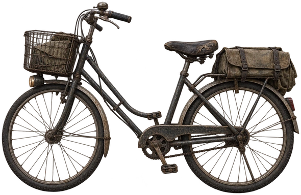
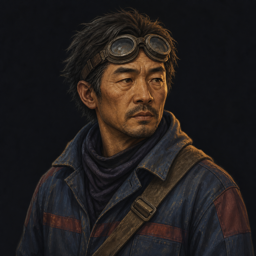

서울까지 400km움직임 · 대화 · 기억




밀양 외곽DAY 2 · 흐린 오후
길가에 누군가 있다.

밀양 외곽 · 정차01 / 03
짐받이에 방수포 꾸러미를 실은 자전거가 마주 온다. 남자의 조끼에 손바느질로 수놓은 글자.
우편

우편부길 위에서 만난 사람“수신인을 찾아다닌 지 몇 년째예요.”
계속 듣기↗내가 한 일물 한 잔 대접한다
우편부는 물을 반만 마시고 반은 자전거 체인에 부었다.
우편부길 위에서 만난 사람
“얘도 목마르거든.”
답례로 어느 고개의 지름길을 알려줬다.
물 −1모두의 기분 +2
공책에 남은 이야기↗다른 선택 살펴보기↗내가 한 일명단을 맞춰본다
우편부가 손때 묻은 명단을 펼쳤다. 아는 이름은 없었다.
대신 알고 있는 정착지 소식을 전했다. 우편부는 세 곳의 이름을 받아 적고 신이 나서 페달을 밟았다.
우편부길 위에서 만난 사람
“오래 묵은 편지가 두 통이나 줄겠네!”
모두의 기분 +3
공책에 남은 이야기↗다른 선택 살펴보기↗여행 공책길에서 남은 이야기
소문
우편부의 지름길
물 반 잔의 답례.
어느 고개의 지름길.
내가 한 일
물 한 잔 대접한다
여행 공책길에서 남은 이야기
인물
자전거 우편부
주소 대신 이름과 얼굴로 배달한다.
여러 해째 수신인을 찾는 중.
내가 한 일
명단을 맞춰본다
검토용 시안 · 실제 게임에 미적용 · 무음